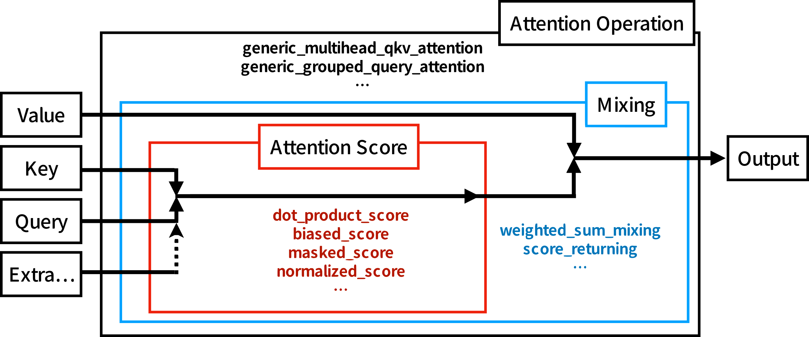

NeuralAttentionlib
Reusable functionality for defining custom attention/transformer layers.
NeuralAttentionlib.jl aim to be highly extendable and reusable function for implementing attention variants. Will be powering Transformers.jl.
Design

The core idea of this package is to make the attention operation composable, so that most of the attention variants can be easily defined without rewriting other parts. For example, normal attention use softmax on the attention score to normalize weight of each entries. If you want to replace softmax with other normalization function, such as L2-norm, there is a problem that they require different ways to mask specific entries such as paddings. With this package, we can easily do this by providing a different AbstractMaskOp to masked_score, so no copy-paste is needed. For another example, some position embeddings are adding values to the attention scores, with this package, you can directly chain the position embedding function (or use biased_score) with other score functions. Moreover, the same definition can be used directly for high dimensional attentions, such as image or video.
This package contain 3 submodules: Matmul, Masks, and Functional.
Matmuldefines an Array wrapperCollapsedDimsArray{T}(array, ni::Integer, nj::Integer)which treat n-dimensional array as 3-dimensional array while preserving the original shape. By explicitly specifying which dimensions should be the "batch" and "length" dimensions, the implementations of attention do not need to worry about the input dimensions.Masksprovides an interface to define non-allocating masks with support for both CPU and GPU (using Julia's broadcast interface) and many pre-defined masks. For example,CausalMask()is just a Julia object and it would NOT allocate an^2attention score mask either on CPU or GPU. These masks are also composable, you can use&/|to combine, for example, causal mask and padding mask without extra allocation or the need to write extra code.Functionalcontains the implementation for the "attention score"s, "mixing"s, and "attention operation"s. The interface of "attention score"s allow you to chain different score function together, such asnormalized_score,masked_score, andbiased_score. And the interface of "attention operation"s allow you to provide different score functions and mixing functions. The other part, such as reshaping for multi-head, are automatically handled.